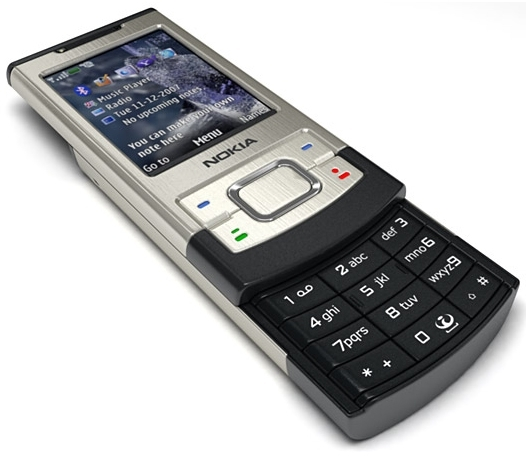

Nhắc đến các sản phầm điện thoại nắp trượt Nokia ta không thể bỏ qua Nokia 6500 Slide.Nếu đàn anh 6500 Classic mang phong cách cổ điển, quý phái thì Nokia 6500 Slide lại khoác lên mình phong hiện đại và bóng bẩy. Với bỏ ngoài và các phím chức năng của máy được làm bằng chất liệu thép không gỉ thay vì nhôm, nên dòng sản phẩm Nokia 6500 Slide mang vẻ ngoài mạnh mẽ và vô cùng sành điệu. Chiếc điện thoại mang lại cho người dùng cảm giác cầm rất chắc tay mặc dù chỉ cầm chỉ vừa đủ trong lòng bàn tay. Tuy chiếc điện thoại nắp trượt Nokia 6500 Slide này không còn nhiều trên thị trường, không còn được những nhà phân phối lớn uy tín như FPTShop phân phối nhưng nó vẫn còn được một số shop sưu tầm lại hàng cũ để bán cho những người hoài cổ đam mê điện thoại nắp trượt cũ.
